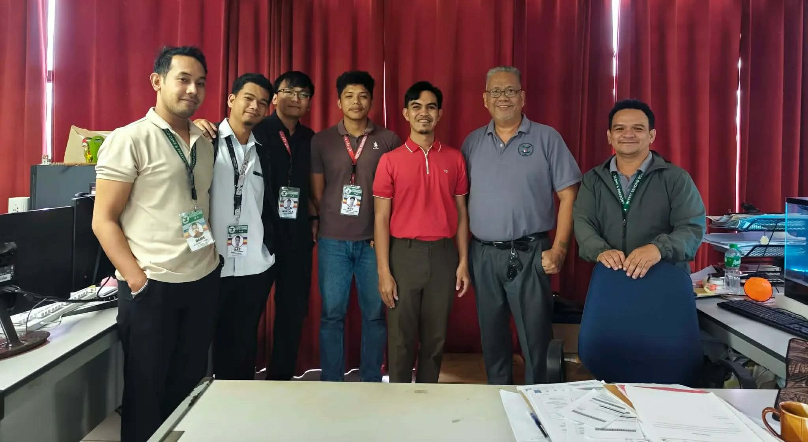
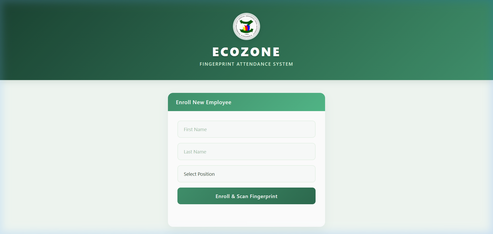
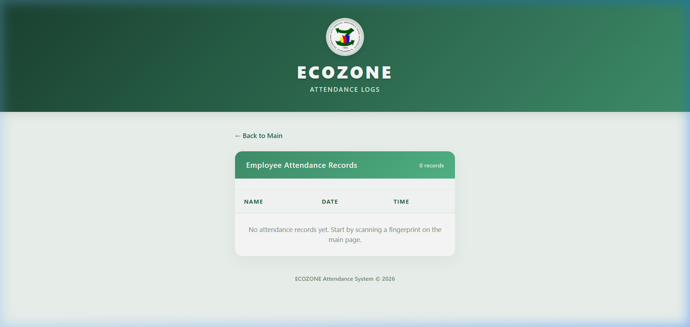
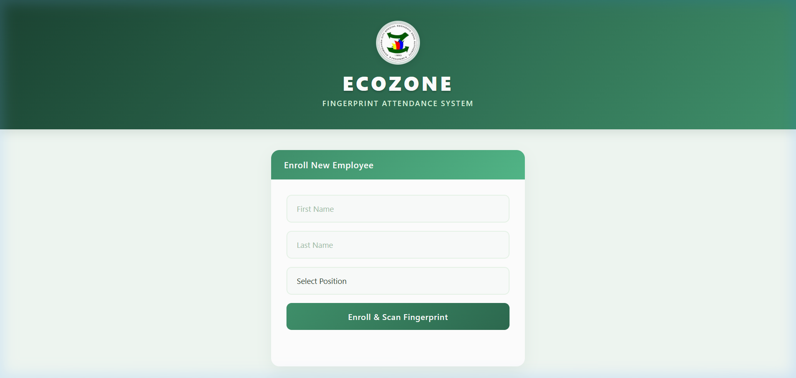

Loading Portfolio…
Zamboanga City Special Economic Zone Authority & Freeport
Management Information Systems Division
Western Mindanao State University — College of Computing Studies
The Zamboanga City Special Economic Zone Authority and Freeport (ZAMBOECOZONE) is a government-owned corporate entity that envisions itself as the premier economic hub for trade, manufacturing, ecotourism, agro-industrial sector and a preferred investment and employment gateway to the ASEAN Region by 2025.
Mission: A haven of economic activities that supports the mandate of generating investments and employment by providing readily available areas, infrastructure facilities and utilities, along with competent and professional employees that render excellent services.
As IT Officer Trainees under the Management Information Systems (MIS) Division, our team was immersed in real-world IT operations. Our flagship project was the development of the Biometric Fingerprint Attendance System.
MIS Division
180 Hours (11 Weeks)
BSCS – 2A
Fingerprint Attendance
IT Officer Trainees from Western Mindanao State University — Bachelor of Science in Computer Science, 2nd Year.
IT Officer Trainee
BSCS – 2A | 2024-02613
WMSU – College of Computing Studies
IT Officer Trainee
BSCS – 2A | 2024-01412
WMSU – College of Computing Studies
IT Officer Trainee
BSCS – 2A | 2024-01395
WMSU – College of Computing Studies
A week-by-week record of tasks, learnings, and milestones.
Joined the official orientation program, toured the HTE building, met supervisors and team members, and learned company policies and procedures.
Studied the Data Privacy Act of 2012 (RA 10173) to understand legal obligations for personal data handling, processing, and protection in projects.
Initiated development of the biometric fingerprint scanner system using C++ and U.are.U 4500 SDK. Implemented cryptographic hashing for secure biometric data storage. Installed WordPress CMS and explored the Government Web Template (GWT).
Set up CodeIgniter 4 and learned MVC architecture. Created a GitHub repository with three forks on a shared branch for collaborative development. Made significant progress on the biometric project.
Continued development of the fingerprint attendance system (40–50% complete). Participated in a mentor evaluation, presented the system, and incorporated feedback for improvements.
Focused on understanding CI4 fundamentals — routes, controllers, and views. Set up a development environment and completed small practice projects to reinforce the MVC workflow.
Installed and configured a local WordPress site. Created demo pages, menus, and customized themes. Tested plugins and resolved plugin–theme conflicts through independent research.
Assembled a straight-through Ethernet cable using T568B color coding standard. Connected RJ45 connectors and verified stable network connectivity through testing.
Improved UI layouts for better usability, organized project files on GitHub, and clarified system data flow from input to storage and display.
Polished the fingerprint attendance tracker — checked system flow, improved the interface, fixed minor bugs, and conducted feature testing to prepare for deployment.
Studied the connection between route, view, and model in the CI4 project. Participated in mentoring sessions and team discussions on system flow and framework structure.
Moments from our internship at ZAMBOECOZONE.

Showcasing the design and UI of our ongoing Biometric Attendance System.



Technical and professional skills developed by the team.
RA 10173 compliance & personal data handling
Collaborative development & peer communication
Debugging, research & technical troubleshooting
Secured biometric data with hashing algorithms
The internship bridged the gap between classroom theory and professional practice. Building a biometric attendance system from scratch — integrating hardware, backend logic, and a web interface — gave us a complete view of how systems are built in real organizations.
Over 11 weeks, we grew from basic orientation to implementing SDK integrations, MVC frameworks, and cryptographic hashing. Each week introduced new technologies that expanded our technical foundation significantly.
Working within the MIS Division taught us how professional teams operate. We developed critical soft skills — communication, collaboration, constructive feedback, and workplace etiquette — that no classroom can fully replicate.